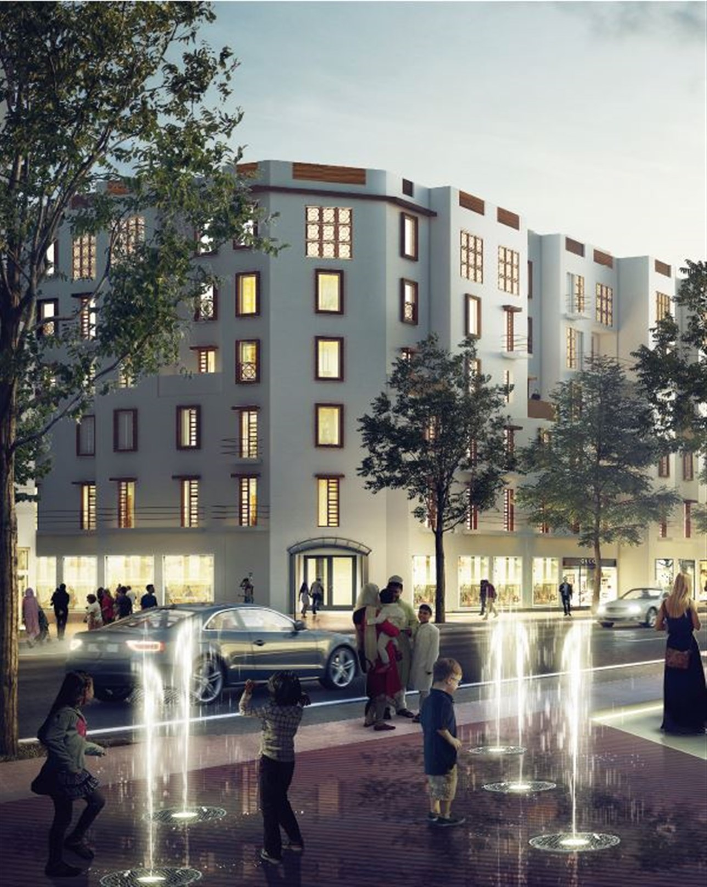
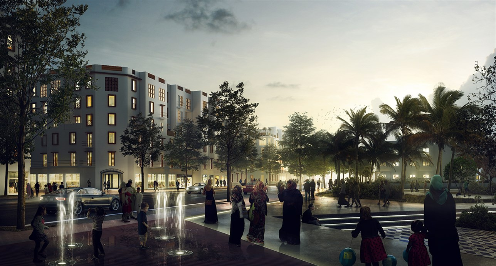
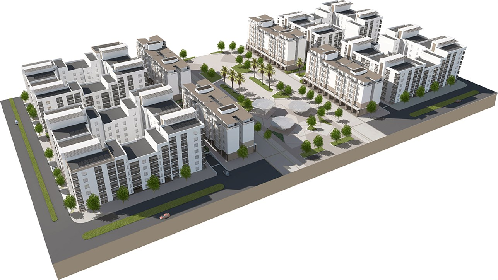
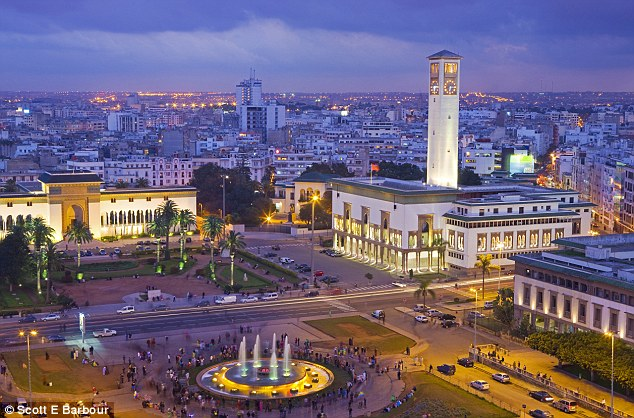
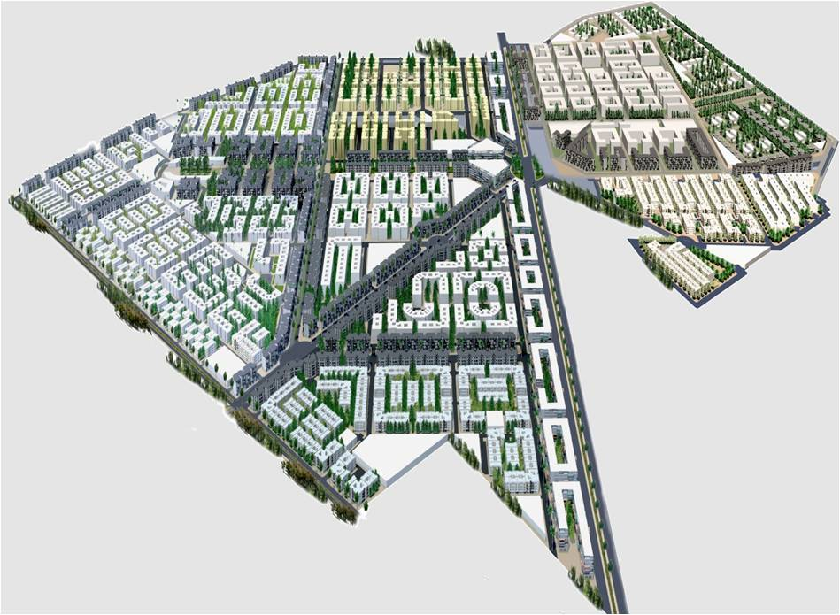
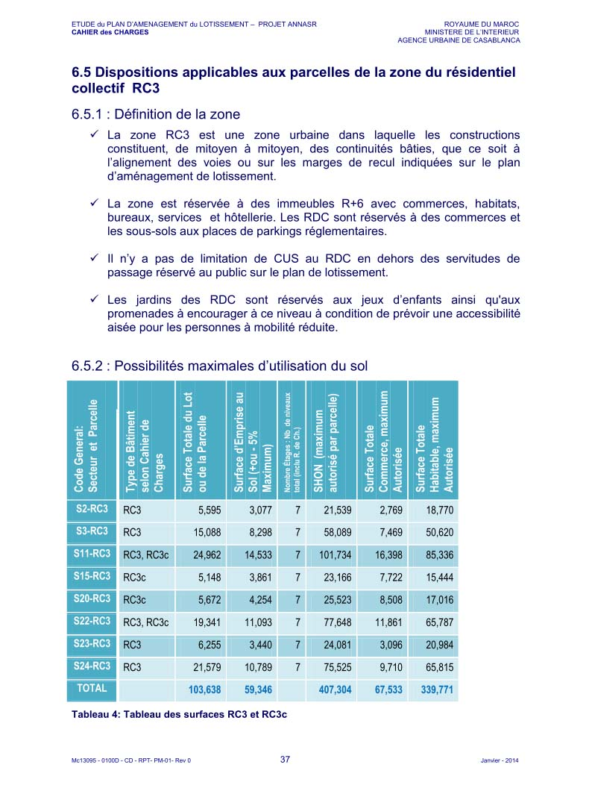
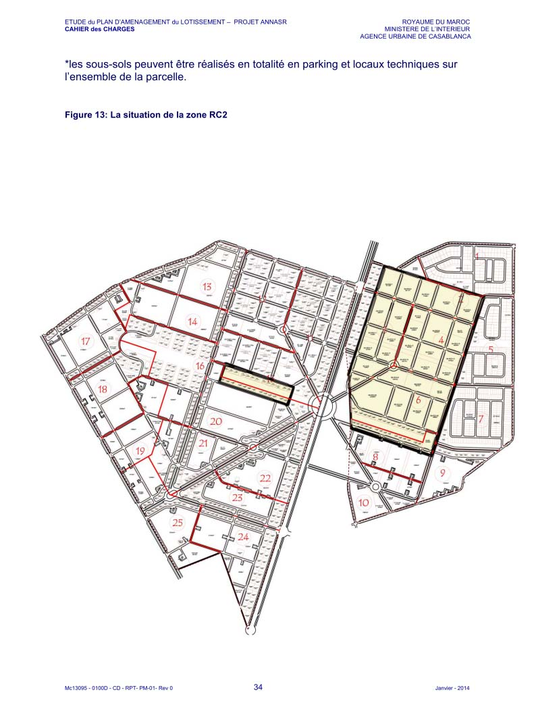

The Annasr master plan is a full urban design framework for a satellite city on the outskirts of Casablanca, commissioned by the Agence Urbaine de Casablanca and the Ministère de l'Intérieur as part of Morocco's national programme for sustainable urban expansion.
The plan covers over 103,000 m² of land across multiple residential and commercial zones — RC2 and RC3 classifications — with a total authorised built floor area of 407,304 m². Seven mixed-use sectors integrate R+6 residential towers with ground-floor commercial frontage, structured underground parking, and generous public realm provision including tree-lined boulevards, children's play areas, and accessible promenades.
The architectural language draws on Moroccan Art Deco heritage — mashrabiya window screens, rounded corner facades, and warm terracotta tones — while meeting contemporary standards for density, walkability, and passive environmental performance. The street-level render captures the ambition of the brief: a genuinely liveable urban quarter that serves both residents and the wider city.






